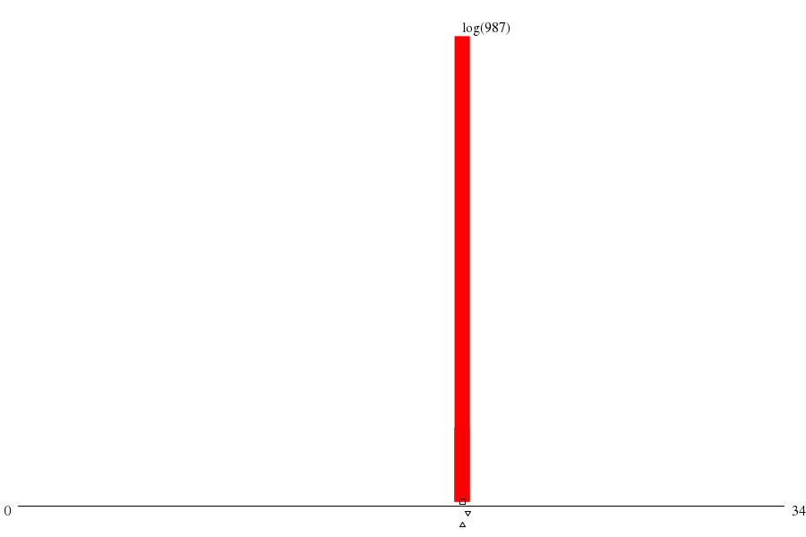

|  | ||
| maxs | mins | |
|
(1002.s) 3408 |
(641.su) 1973 |
|
|
(1003.s) 3304 |
(549.su) 1973 |
|
|
(0.summ) 2457 |
(230.su) 1973 |
|
|
(143.su) 1974 |
(1001.s) 1974 |
|
|
(165.su) 1974 |
(1000.s) 1974 |
| disk (MB) | mode ▵ | μ ▫ | (μ+σ)/μ | 1st alloc. max value | 1st alloc. max through ▿ | 1st alloc. min waste |
| -- 2.070 xE9 |
-- 2.073 xE9 |
-- 1.032 |
throu: 1.000 waste: 39.91%
alloc: 3.574 xE9 |
throu: 1.599 waste: 7.73%
alloc: 2.097 xE9 |
throu: 1.599 waste: 7.73%
alloc: 2.097 xE9 |